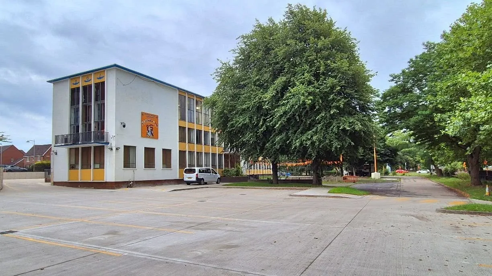
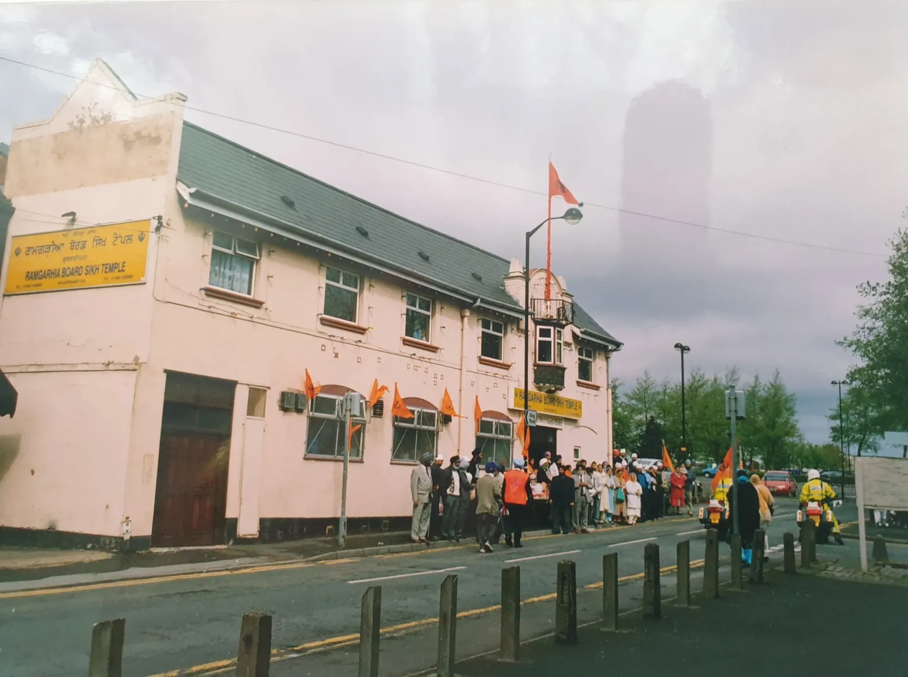
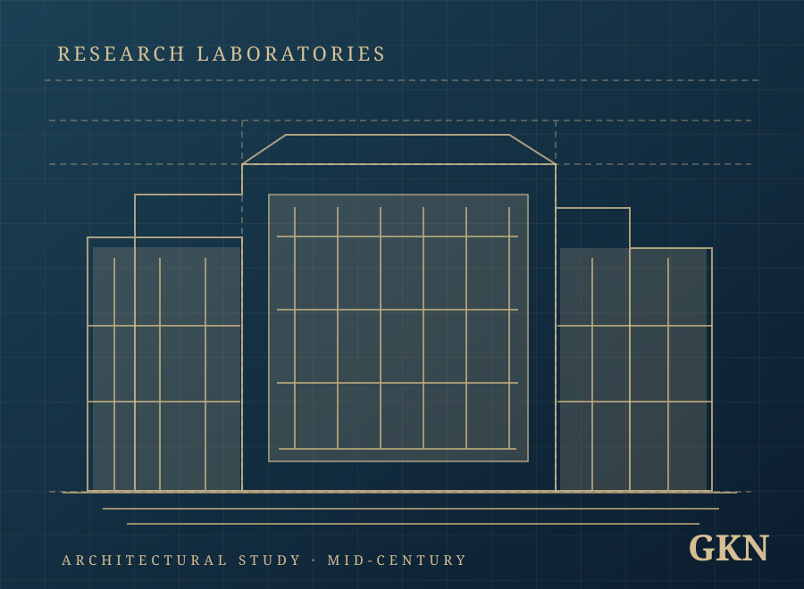
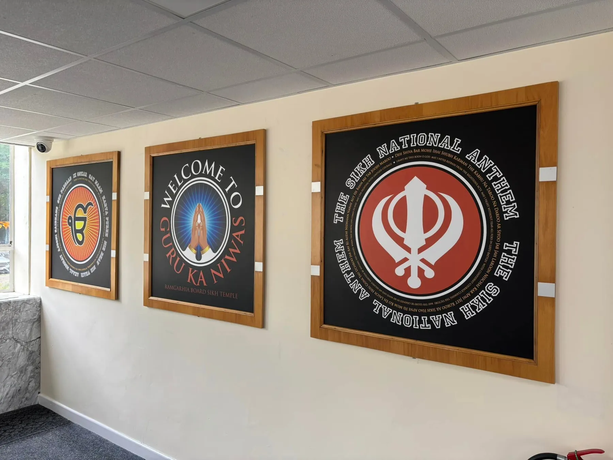

From Westbury Street to Rothesay Gardens
A journey of faith, a home for all
Discover how Wolverhampton’s Ramgarhia Board congregation established a place of worship, and how a former engineering research site became Guru Ka Niwas.

Before the building,
there was a sangat
Guru Ka Niwas did not begin with the building on Rothesay Gardens. Its roots reach back to Wolverhampton’s early Sikh community and the founding of the Ramgarhia Board Sikh Temple on Westbury Street.
Academic research based partly on interviews with early community members places the origin of the Westbury Street congregation in 1965, following disagreements within an earlier Gurdwara committee. The congregation initially rented premises and subsequently purchased the building.
The same research describes Sikh worship in Wolverhampton during the late 1950s and early 1960s. A separate heritage chronology refers to the Westbury Street Gurdwara at approximately 1975; the exact date of its property purchase is not confirmed.
University of Wolverhampton research
STREETFROM THE GURDWARA'S ARCHIVE
The earlier Ramgarhia Board Sikh Temple. Archive photograph shared by the Gurdwara.
Westbury
Street
The temple on Westbury Street became a spiritual and community home for the Ramgarhia Board sangat. Families gathered there for worship, connection and mutual support as the Sikh community put down deeper roots in Wolverhampton.
The Inter Faith Wolverhampton directory listed “Ramgarhia Board” at Westbury Street, WV1 1JD.
A 2011 archival photograph still shows signage on the former building, but does not establish exactly when regular worship there ended.
From industrial innovation
to spiritual sanctuary
Before becoming the Gurdwara, the Rothesay Gardens building was part of Wolverhampton’s engineering history.

AN ARCHITECTURAL STUDY · ILLUSTRATIONGuest, Keen & Nettlefolds
Planning records place the origins of the research-and-office complex in 1949, with construction in the early 1950s. The architects were Lavender, Twentyman and Percy.
The complex included research laboratories, offices and associated facilities. It was locally recognised for its architectural interest and the research complex received an RIBA Bronze Medal design award.
The journey to
Rothesay Gardens
In a planning report dated 22 July 2008, Wolverhampton City Council identified the trustees of the Ramgarhia Temple on Westbury Street as applicants seeking to convert the former GKN office building for community and religious use.
This is direct documentary evidence connecting the former Westbury Street Gurdwara with today’s Guru Ka Niwas.
The plans proposed a Darbar hall and spaces for learning, community gathering and other activities. The plans described what was proposed; they do not prove every facility was built.
A separate heritage timeline gives 2009 as the date associated with the Rothesay Gardens Gurdwara. Planning continued around this period, so the exact date the congregation completed the move has not yet been established.
Read the 2008 council planning report ↗
Milestones in
our journey
A documented chronology drawn from academic research, local archives and public records.
- Late 1950sACADEMIC RECOLLECTIONS
The first gatherings
Small groups of Sikhs gather for worship and divaan programmes as Wolverhampton’s Sikh community grows.
- 1965UNIVERSITY RESEARCH
Westbury Street congregation
The research identifies the origin of the Ramgarhia Board congregation, following a division in an earlier Gurdwara committee. Premises are initially rented.
- c. 1975APPROXIMATE DATE
Recorded on the heritage timeline
A separate heritage chronology dates the Westbury Street temple to approximately this period. The precise building purchase date is not confirmed.
- 2007–08DIRECTORY + COUNCIL RECORD
A new home envisioned
Westbury Street appears in a worship directory, while trustees progress an application to reuse the former GKN research offices.
- 2009HERITAGE CHRONOLOGY
Rothesay Gardens in heritage records
The heritage chronology associates the Gurdwara with Rothesay Gardens from 2009. The precise handover and overlap of premises remain unverified.
- 2011CHARITY COMMISSION
Registered as a charity
Guru Ka Niwas Gurudwara (Ramgarhia Board Sikh Temple) becomes registered charity 1142433.
- 2017DOCTORAL FIELDWORK
An additional Darbar Hall
A University of Birmingham researcher describes attending the August 2017 opening of an additional Darbar Hall and a gathering with the sangat and local civic representatives.
- TodayA LIVING COMMUNITY
A living home for sangat and seva
Guru Ka Niwas continues to welcome worshippers and visitors to its Wolverhampton home.

Built by a community, for generations
From its early years at Westbury Street to the development of Guru Ka Niwas, the enduring story is about faith, belonging and the work of the sangat.
Historic photographs, memories from founding families and early committee records would help us preserve this story with even greater accuracy.
Visit Guru Ka Niwas Explore the wider Ramgarhia heritage →Explore the evidence
The history above draws on published academic studies, council documents and public records. Follow the originals to learn more.
Early Sikh Wolverhampton
University of Wolverhampton research describing the community and Westbury Street origins.
View research ↗ 02 · PRIMARY RECORDThe 2008 planning report
Council records explicitly connect the Westbury Street trustees and the former GKN site.
View planning report ↗ 03 · ARCHITECTURAL RECORDThe former GKN laboratories
The industrial building, its architectural significance and local heritage designation.
View building record ↗ 04 · FIELDWORKLife at Guru Ka Niwas
University of Birmingham doctoral research including the 2017 Darbar Hall opening.
View thesis ↗ 05 · HISTORICAL PHOTOGRAPHWestbury Street, 2011
Credited photograph of the earlier Ramgarhia Board building by Dennis Harper.
View photograph ↗ 06 · PUBLIC REGISTERCharity 1142433
Official registration and trustee records for Guru Ka Niwas Gurudwara.
View Charity Commission ↗Registered charity trustees and recorded officers
Charity Commission trustee register: Kuldeep Singh Burmi (listed as Chair), Kuldeep Kaur Juss, Kamaljit Kaur Devsi, Kuldip Kaur Chana and Avtar Singh Bansal; their recorded appointment dates are 1 August 2022.
The 2024 annual report names Avtar Singh Bansal as President, Kuldeep Singh Burmi as General Secretary and Kuldip Kaur Chana as Treasurer. These are documented roles for that reporting year, not a verified current management committee or election result.
History lives in
the sangat
Have memories, photographs or documents relating to Westbury Street or the early years at Rothesay Gardens? They may help preserve the story for future generations.